7月4日至5日，“哥飞的朋友们”2026年中分享交流会深圳站在深圳御景国际酒店举行。650位朋友从全国各地赶来，会场座无虚席。
这次活动也要先感谢三个合作伙伴：火山引擎、Subotiz 和 Sider.ai。感谢合作伙伴们对这次哥飞线下大会的支持，也感谢现场每一位远道而来的朋友。
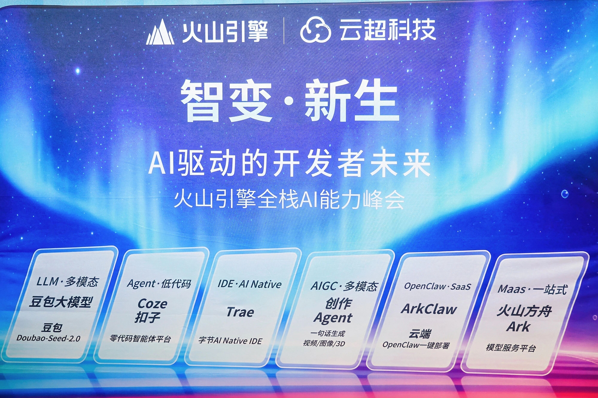
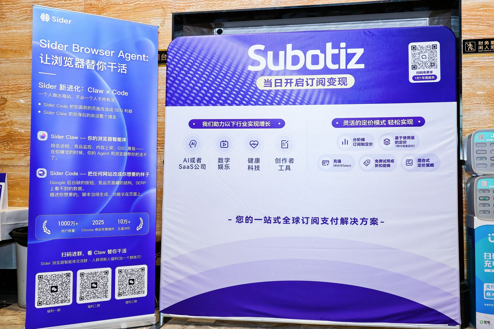
火山引擎、Subotiz 与 Sider.ai 现场展位
两天的日程排得很满：第一天是分享日，八位嘉宾从上午十点一直讲到傍晚，晚间还有哥飞两个多小时的闭门“小灶”；第二天则是全天的上站Hackathon与颁奖典礼。
本文记第一天——白天的八场分享与晚间的加餐小灶；第二天的完整战报，我们将另发一篇文章详述。
登台的八位嘉宾当中，有入行十余年的搜索引擎优化（SEO）老兵，有从建筑行业转身、一年做到月入一万美元（圈内称“月入万刀”）的零基础转行者，有毕业刚满一年的00后，也有高中未读完、从义乌走出来的2003年生的小伙。八个人背景相去甚远，讲到关键处，观点却一再不谋而合。
本篇带着大家回顾，同一个问题，不同的人从各自的实战经验里给出了怎样的回答。

分享嘉宾（按出场顺序）
上午场
- • 小羊 （上午10时）：2003年生的独立开发者，连续创业者，从私域操盘转型AI出海，一年上线三十多个网站，拿下七个关键词的谷歌第一。分享主题：《经典成事思维做出海——心态是最好的风水》。 小羊台上分享照片
- • SEO小平 （10时45分）：独立站B2B与B2C双赛道SEO专家，外贸电商行业从业十余年，日语专业出身。分享主题：《AI助力纯血版小语种网站掘金》。 SEO小平台上分享照片
- • Asnull （11时30分）：00后，2025届毕业生，加入哥飞社群不到半年实现月入万刀，现为全职独立开发者。分享主题：《从穷学生到月入万刀+，我的出海心路历程》。 Asnull台上分享照片
下午场
- • John （下午2时）：英文SEO实战派，深圳SEO大会创始人，2013年入行，曾在硅谷两家公司担任SEO经理。分享主题：《放弃关键词思维！AI SaaS出海如何重构SEO及获客策略》，含现场实操演示。 John台上分享照片
- • Fiona （下午2时45分）：AI产品经理出身，自称“一个乐观的AI降临派”，出海四个月实现月入万刀。分享主题：《出海路上如何更快拿到正反馈》。 Fiona台上分享照片
- • Nicole辰 （下午4时）：YouMind社区运营负责人，亿级转化内容专家，推特单条内容最高曝光226万次。分享主题：《做Employee Advocacy，打造社媒Native团队》。 Nicole辰台上分享照片
- • 井然 （下午4时45分）：前建筑行业副总经理，去年3月零基础加入哥飞社群，半年实现月入万刀。分享主题：《普通人如何通过AI出海完成职业转型——从建筑行业到AI独立开发者的成长之路》。 井然台上分享照片
- • 哥飞 （下午5时30分）：社群发起人，压轴登场。分享主题：《那些经过实践检验，2026年依然有效的SEO实战技巧》。 哥飞台上分享照片
一、找词：全天被提及最多的两个字
若给这一天的高频词排序，“找词”当之无愧排在第一。
Fiona 把话说得最直接：新手的第一要务不是打磨技术，而是找对方向，“找词要放在第一位”。
她的核心原则是寻找“鱼多、人少”的赛道——如同捕鱼，先找到鱼多的池子。
具体怎么找？她的答案是跟着高手学：分析对方的外链，从首次外链倒推其操盘路径；监控对方每天新增的关键词；让AI去分析对方的SEO结构与交互设计。
她还提供了一个用真金白银判断赛道的办法：谁在长期投放广告、谁在购买高价外链，就说明这个赛道确实赚钱。
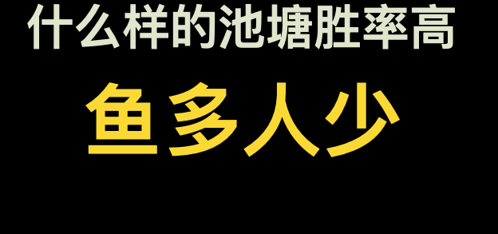
Fiona“鱼多人少”PPT
哥飞 则把“找新词”向源头又推进了一步。他指出，谷歌趋势早已不是新词的第一现场——一个词在谷歌趋势里冒头时，往往已在别处火了两三天。
真正的源头在哪里？
游戏类新词，看游戏主播与资讯网站：拿过去一两年的新词档案倒推，看哪些主播、哪些网站总是最早发布内容，将其全部关注起来，并订阅这些网站的sitemap，“相当于有几十双、上百双眼睛帮你发现新词”。
AI模型类新词，则要盯住模型公司的官方推特、博客和视频频道。
而新玩法往往诞生于社交媒体——别人把热梗当作消遣，你要意识到机会来了。
他还介绍了一套自动化方案：通过推特接口定时抓取近期高赞、带链接的推文，再结合流量查询与域名注册信息接口，让程序每小时跑一遍，自动筛出正在流行的全新网页。
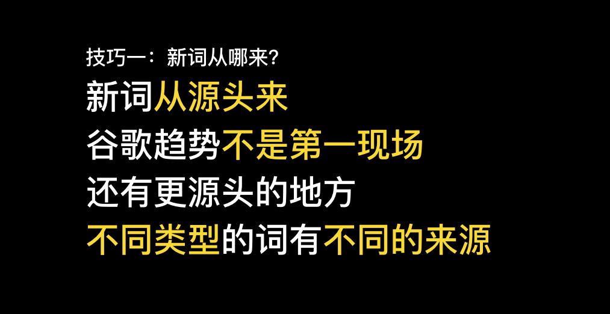
新词源头PPT 01
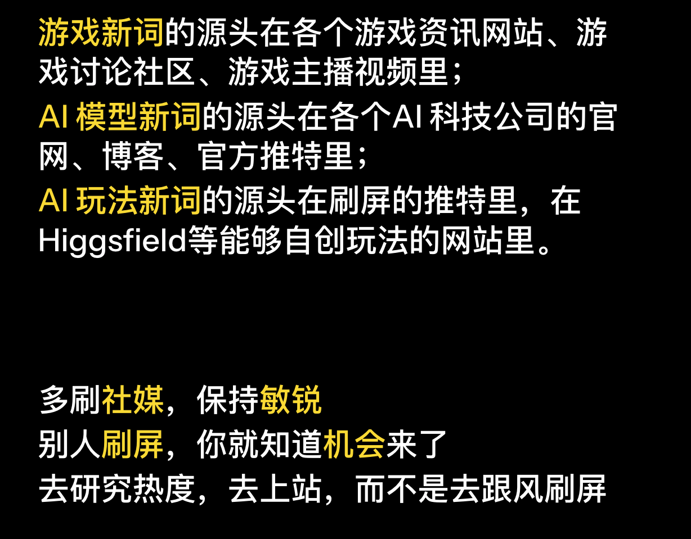
新词源头PPT 02
Asnull 的经历为这套理论提供了注脚。他的第二个网站，就是在谷歌趋势热搜榜上看到一个AI新词后当即注册域名，一小时内上线——次日一早便有了数据，一周之内涌入数千用户。
他同时提醒，不要只盯着模型词内卷：“要关注模型词背后的需求。”图像模型走红，背后的真实需求是图片编辑，有群友做了竞争度看似很高的AI图片编辑站，照样拿到结果；提示词类需求同理。
至于热点，他的态度是“能追尽追”：他曾追一个爆火的测试类热点上线网站，次日即有数千访客。“不要先想这个流量怎么变现，先把流量拿到手再说。”
小羊 补充了新手视角：新词也分大词、小词。大词之上人人厮杀，新手难有胜算，不如去做小词——“新词里的小词，正反馈更快、门槛更低，做到第一也可以吃得很好。”他自己的一个小词站，去年年底结算，单月收入一万美元。
井然 则强调，要找的不是“新”，而是“被验证过”：一定要做市场已经验证过的需求，“不要想着教育市场”。
他分析竞品分析得很细——流量多少、来自哪些国家、SEO是否做到位，然后换一个国家切入，把SEO做得更好一点。“做多了会有一种网感，看到一个站就知道自己能不能胜过它。”
连主讲小语种的 SEO小平 ，谈的其实也是同一件事：机器翻译出来的词往往没有搜索量，只有单独调研关键词，才能发现日语里“手机壳”的地道说法搜索量高达三十余万——比美国市场还大，竞争难度反而更低。“这就是哥飞群里讲的找新词、找新机会，只是换了一种语言而已。”
到了晚场答疑， 哥飞 又把找词的工具箱翻了个底朝天：拿社群总结的51个词根——generator、creator、maker、builder等——组合检索。
用“站找词、词找站”的方式滚动挖掘；去Reddit、Hacker News这样的开发者社区看“炫耀帖”——“刚开始赚钱的人一定忍不住炫耀，程序员总爱写‘我做了个网站，搞到了很多流量’”。
连用户的拼写错误都是词——他自己有个游戏站，做的就是用户把复杂单词记错之后形成的“typo词”，照样是真实的搜索量。
他还特意澄清，新词不限于游戏和AI：有群友做过邮轮疫情扩散地图的资讯站，这个月也有不少人在做世界杯主题，“只要按我们的标准筛选出来，就是可以做的”。
二、AI改写了SEO的规则：它不是对手，是伙伴
John 的开场，抛出了一个令不少听众心头一紧的判断：传统的“关键词本位思维”已受到巨大冲击。
谷歌每天有15%的搜索是全新的词，AI概览（AI Overview）又把搜索结果的位置越挤越低，“就算排到第一，用户也要下滑一两屏才能看到”。
更根本的变化发生在用户一端：如今用户先通过AI了解一个品牌，再到官网验证——如果AI给出的结论与官网叙事对不上，信任便无从谈起。
因此他主张，从“以网站为中心”转向“全网优化客户旅程”：竞品对比页不只是给用户看的，更是“教育AI”用的，让AI在推荐时优先推荐你，“不需要排第一，排进前二十就够了”。
他还给出一个九步重构框架，并现场用AI从零演示了一个差异化竞品项目——从定位、商业模式九宫格到客户旅程，AI几分钟就能完成过去需要数天的功课。
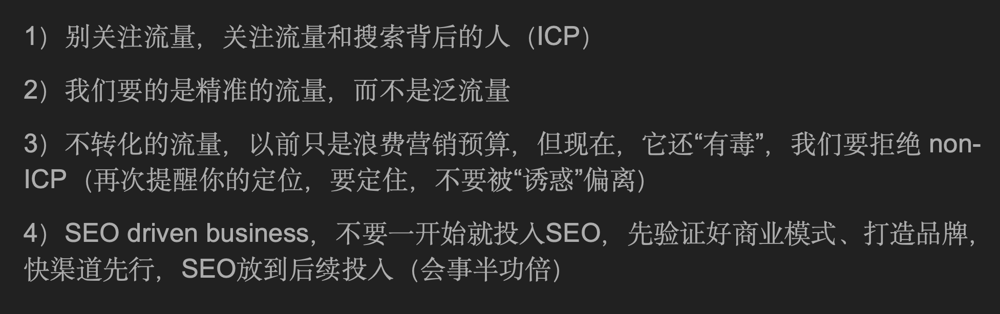
John九步框架PPT 01
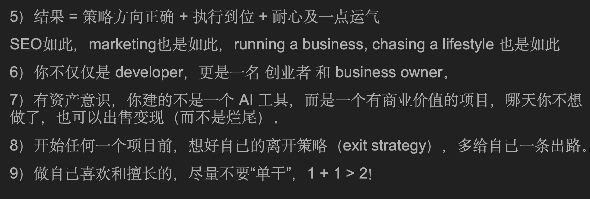
John九步框架PPT 02
SEO小平 讲了一个角度独特的观察：如今所有大模型公司的发布会都在强调“推理能力”，可大多数人仍只把AI当翻译用。“这就好比雷军发布新手机，说‘我这部手机能发短信’——翻译是大模型问世之前就有的东西。”
他的用法是把推理开到最大：进入一个陌生国家的市场之前，先让AI深度调研本地用户的痛点、购买决策因素与文化禁忌，再用“中文加本地有搜索量的关键词”的混合提示词，让AI原生写作，而非翻译。
哥飞 分享了他如今每天做得最多的两件事：看到一个陌生网站，先问AI“这个网站是做什么的”，再问“它靠什么变现”、“它的主要流量来源是什么”——几个问题问完，一个网站便摸了个大概，而且可以同时并行调研多个网站。
判断关键词的搜索意图也是一样，“我的第一反应一定是问AI”，尤其是涉及当地文化、节日的词，AI确实能告诉你搜索者想要什么。
井然 感受最深的是门槛的变化。他去年还是一个身边没有任何AI从业朋友的建筑人，如今一个人便是一支团队——产品、开发、设计、运营、客服全部自己承担，两小时可以上线一个网站，“只要是调用接口的产品，给我看过一眼，我都能复刻”。
他的心得是把所有重复性流程沉淀为技能模板：“AI很强，但自己的思维和框架也要跟上。”
这个话题最好的收束，是 Fiona 的总结：“AI是我们的伙伴，不是对手。我们要卷的是其他人类——只要排在人类的前10%，就能过得很好。”
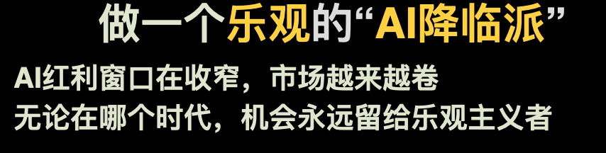
Fiona总结页PPT
三、小语种：别再“一键翻译”，要做就做“纯血版”
这是今年被反复点名的增量方向。
哥飞 在压轴分享里专门交代了背景：从2025年起，陆续有群友向他报喜——英文词做不动了，专门做一个韩语站、日语站，反而拿到了流量。
“这个消息我藏了半年，本来想自己用。”最终，他还是把实战跑通了这套打法的SEO小平请上了台。
他顺带批评了最常见的偷懒做法：“你辛辛苦苦调研了英文关键词才做好英文站，为什么到了日语、韩语就变成一键翻译了？应该用做英文站的方式，把每一个语言的站都做好。”
SEO小平 的分享，把这套打法讲到了毛细血管的层面。他给它起了个名字——“纯血版小语种”：从头到尾，让网站看起来就像本地人建的。他的论据密集得让人记笔记都来不及：
- • 词不能翻译，要重新调研 ：英语“手机壳”一词直译成日语，搜索量只有320；而日本人实际使用的“智能机壳”说法，搜索量高达三十余万——直译会让你错过整个市场。 小平“手机壳”关键词对比PPT
- • 域名要用本地顶级域名 ：到谷歌日本站搜索任何电商词，排在前三的清一色是本国后缀的域名，“这就是逆向拆解成功案例得出的结论”。
- • 支付是最大的转化断点 ：不要以为两大国际支付工具全球通吃——波兰人惯用本地手机钱包，接入之后“转化一下子就起来了”；巴西人结账时如果没有让他填写个人税号，“对方会直接认定你是骗子”。
- • 法律与文化是红线 ：电子烟在不同国家的年龄限制各不相同，翻译站做不到分国家弹窗提示，他们有运营了四五年的域名因此被直接查封；中东文化里黑色代表哀悼与复仇，“黑五”大促的黑色海报会令当地用户极度不适；在比利时，纯凭运气的抽奖会被判定为不正当商业行为。
- • 书写细节决定信任 ：德国人的千分符是小数点、欧元符号写在金额之后——“你的价格让人一头雾水，到底是一块钱还是一千块钱，人家怎么敢买？”日本电商的结算页一定设有假名注音栏，因为日本人的姓氏连本国人都未必读得准。
他的完整方法概括起来是五句话：
- 一个网站只做一种语言；
- 域名、服务器、IP地址全部独立（分散式防御，一个站被处罚不牵连其余）；
- 每种语言单独调研关键词；
- 先让AI推理，再让AI原生写作；
- 最后必须有懂行业的真人介入审核。
“这才符合谷歌的EEAT标准，否则AI胡说八道你都看不出来”。
图片与视频同样要本地化：同一张折扣图，日本站写1600日元，欧洲站写10欧元；视频则用AI翻译工具对准口型，直接转成波兰语、西班牙语，“我在路边随手拍的视频，有瑕疵反而更真实”。
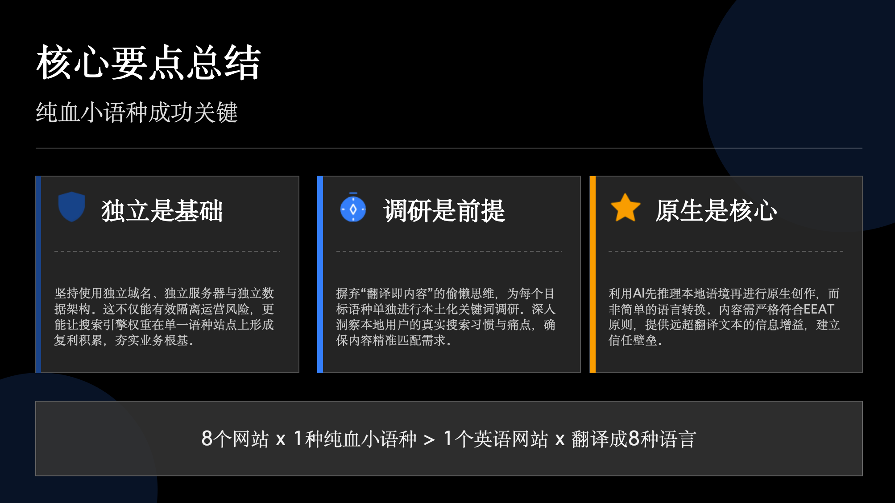
“纯血”方法总结页PPT
Asnull 提供了独立开发者版本的轻量方案：一个人管不过来那么多站，可以先做子目录式多语言，但要单独给小语种子目录发对应语言的外链——小语种竞争小，更容易拿到排名，排名起来之后权重还会反哺主站。他称之为“农村包围城市”。
Fiona 也在分享中提到同一方向： 热门词的小语种爆发晚于英语，提前布局，竞争小得多 。
有趣的是， 哥飞 在晚场给这套打法补了一个边界样本：他的一个单页站做繁体版本时，就直接让AI一键翻译——因为用户会搜的那个词是唯一且确定的，无需再调研。换句话说，调研的意义在于找准那个词；词已经明确时，翻译本身并不是问题。
四、外链：预算之内拼数量，免费的也有用
关于外链，几位嘉宾给出了高度一致、却与“AI的标准答案”相反的结论。
哥飞 说得最坦率：AI会告诉你外链要求精，但实战结论是——除了“几美元几百条的垃圾外链”不要买，其余“只要发了就会有效果”。
预算不多时，一定偏重数量而非质量：“假设你有两千美元，是发四篇五百美元的软文，还是发六十篇三十美元的？一定选后者，六十一定大于四。”
他还讲了博客评论外链的一手进阶玩法：所有人都在同一篇高权重文章下扎堆留言，那就把这个博客的全部文章扒出来，找评论最少的那篇去发——页面的出站链接越少，每条外链分到的权重越高，我们永远“比别人多走半步”。
小羊 是免费外链的受益者。起步时他身上只有几千元，买不起任何数据工具，却发现了必应站长后台这个免费渠道：用它对比竞争对手的外链，“必应自己收录的外链，一定是有效的”。
他还为nofollow链接正名：“nofollow真没那么重要，只要站点权重够高，一样能带来权重。”
付费外链他也交过学费：两百美元买回一千条外链，全是垃圾——他的标准是客座文章外链尽量购买一百美元以上的，一百美元以下就要警惕对方是否为“流量掺水的模板站”。
他甚至把自己站群里的低流量站也利用起来：给新站加外链、做提及，“域名评分能一下子拉到三四十”。
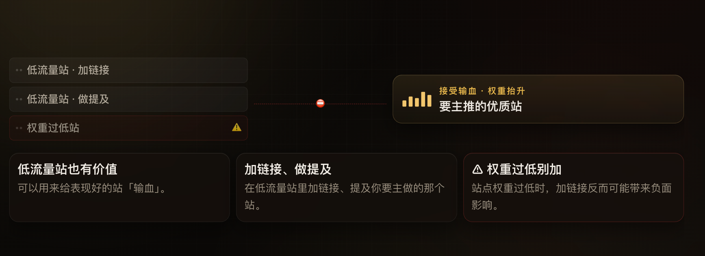
小羊外链方法PPT 01
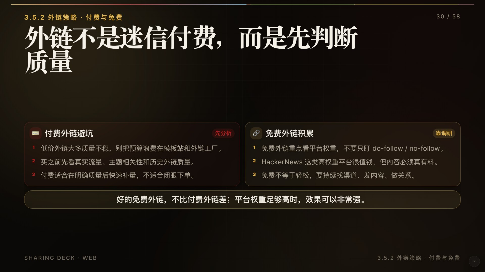
小羊外链方法PPT 02
Asnull 给免费外链找到了一个理论定位——“关键词建设”。他打了个比方：“台下一个人说我叫A，哥飞未必信；台下所有人都说我叫A，哥飞就信了。谷歌也是如此——当外面的网站都说你是A，它就相信你是A。”
今年3月，他拿一个网站做过对照实验：不更新任何内容，只发免费外链，一个月后日点击量从几个涨到六十多个，5月算法更新之后更是一路上扬。
他还总结了一份“这条外链值不值得发”的核对清单：对方网站流量大于一千、近三个月流量趋势向上、有真实的自然搜索关键词、站龄半年以上——四条对照着筛，切莫把外链发在被谷歌处罚过的网站上，反受牵连。
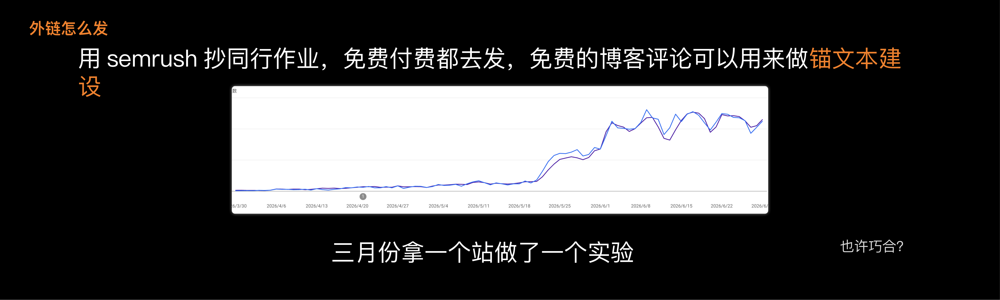
Asnull外链实验数据截图
井然 谈的是坚持：发外链“其实挺乏味”，但这是他每天雷打不动的动作，每个站每天几十条持续在发。他有网站上线半年毫无动静，某一天流量突然跳涨。“SEO的魅力，还是要亲自感受一下。”
晚场， 哥飞 又给外链补了三堂原理课。
第一堂关于快速收录 ：谷歌爬虫靠从已知网页中提取新链接来发现世界，想让新站快点被收录，就去爬虫高频光顾的网页发链接。他现场用site语法加“最近一小时”筛选演示：某开发者社区一小时内就有35个新帖被谷歌收录——在这样的地方发帖带上网址，很快就会被爬虫顺藤摸到。
同一招反过来用，还能鉴别外链卖家：对方网站如果爬虫一个月才来一次，这钱就不必花了。
第二堂关于“被垃圾外链攻击” ：他晒出自己一个只发过一条外链的新站，工具里却显示264条外链——逐条过滤后，真正有效的只剩他自己发的那一条博客评论，其余全是别人制造的垃圾链接。“谷歌足够聪明，早把这些网站打入冷宫了，不用管。”
第三堂，是给白天的观点补一记实锤：他展示了一个最高月流量900多万次的在线小游戏标杆站——“他有大量的博客评论外链，所以我们就知道博客评论外链真的有用，不要听AI跟你说没用。”
他说“就是从这个站开始，我们终于知道游戏站要怎么做了，知道了怎么做好布局排版，知道怎么搞外链。”
五、转化与定价：流量不等于钱
“有流量却不赚钱”，是这一天被回答得最细的问题。
小羊 拿出了他距离“日入万刀”最近的一战：单日四千多访客，做出五千多美元的转化。
他的方法是把转化拆成一个漏斗——注册率、使用率、路径顺畅度、付费率，逐层排查优化。
他的招式相当务实：所有入口都向生成器汇聚，因为“用户在工具站停留最久的地方就是生成器”；
用户想复制提示词？就把注册按钮放在复制按钮上——“把转化动作，放在用户最痛的那个点上。”
价格页是大部分用户的“终点站”，那就在用户点击返回的一瞬间弹出折扣页挽留，“别等邮件，有些用户看到邮件时早已离开”。
他自称“弹窗的狂热爱好者”，并留下了全场传播度最高的一句话：“看到价格的人不一定买，但不看价格的人一定不买——要尽量加大价格的曝光。”
他反复强调要把用户当婴儿看待：“很多付费用户是真的不知道怎么用，每一步都要引导，连付款我都手把手教。”
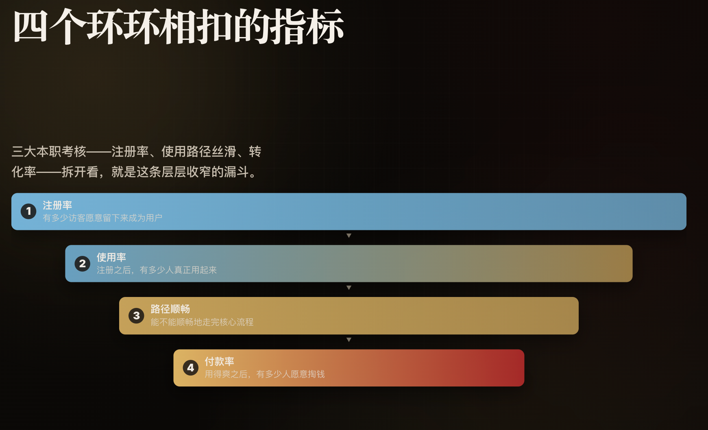
小羊转化漏斗PPT
Asnull 专门讲了定价页设计：档位最多三个，多了用户会不知道怎么选择。入门版便宜，但性价比刻意做低；专业版只贵一点，权益却拉满——目标就是把用户引向专业版成交；高级版则不妨定得贵一些，“高消费用户不在乎五百美元还是七百美元，把权益给足即可”。
年费打折、默认展示年费，这些细节都影响客单价。他同时提醒，网站必须看起来专业、有商业价值：“配色东一块西一块的站，用户不敢登录，更不可能付款——信任感约等于转化率。”
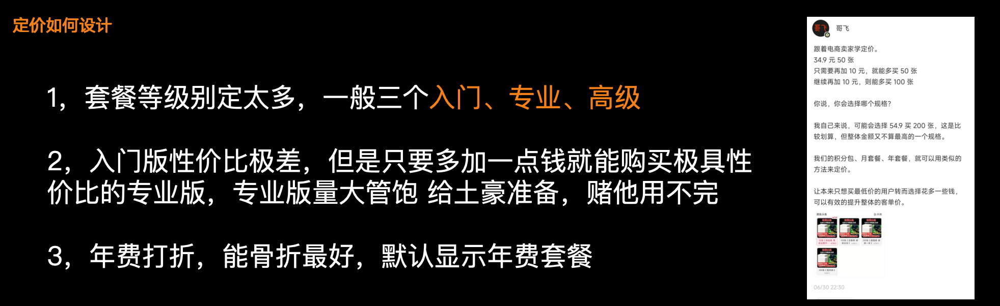
Asnull定价三档PPT
哥飞 教大家反向使用定价页——把它当作竞品调研的透视镜：“每一个收费网站，其他页面都可以不看，一定要看它的定价页。它为什么把某个功能放进更贵的套餐？说明用户真的愿意为这个功能多花钱。你单独做一个站，只做这一两个核心卖点，做到比它更好。”
他还给出一个简便的收入估算方法：看第三方工具显示的月访问量，广告变现的除以一千再乘五美元，用户付费的直接乘0.1，“我拿群友的站验证过，实际收入往往比估算的还多”。
谈到涨价，他转述了群友树哥的心得：“收入很久不涨的时候，就涨价，非常有效——老用户并不会大范围流失。”
到了晚场，他把这套看定价页的功夫当场演示了一遍。拆解Higgsfield的价格表时，他注意到对方在套餐说明里专门以nano banana模型举例“能生成多少次”：“这么大的体量还拿它举例，就说明现阶段这个图片模型就是能带来销售量的。那你单独做一个nano banana网站是不是能赚钱？台下是不是很多人在点头了？”
他由此提炼出“付费号召力”的说法——就像明星有票房号召力，有的模型只放进高档套餐、“七天无限使用”这类权益反复出现，都说明它们拉得动付费：“如果你之前的套餐里没有，回去改一改试一试，说不定你的付费率就提升了。”
另一个细节是，这家大站在每个功能内页都嵌入了全站通用的价格表——弱付费意愿的流量看到“付15美元就能用全站这么多模型”，转化自然发生。他建议大家照学，并给订单加上来源参数，跟踪哪些页面最能带来付费，反过来重点优化这些页面。
Fiona 把变现归为四类：帮用户省时间、帮用户赚钱、让用户爽、赚信息差。“不要学烧钱拿融资的打法，我们花的是自己的钱，要赚能快速变现的钱。”
她最推荐新手做“截流”而非“造势”：需求已经存在，去承接现成的搜索流量；其中模型词的转化最高，“搜模型词的用户，已经准备好付费了”。
井然 补上了成交之后的半场：付费才是真正的开始。他曾遇到一位两百美元年费用户要求退款，便借助AI撰写挽留邮件、赠送积分、介绍用法，硬是把人留了下来；还有用户在他的站上无法完成支付，他索性把对方引导到群友的网站上付费、自己拿分成。“愿意给你发邮件的用户，都是你能争取的种子用户。”
六、以弱胜强的法宝：用户行为数据
这个话题可算哥飞给全场划下的重点，而几位嘉宾的技巧恰好都能对上号。
哥飞 的判断是：为什么你的外链不如别人多，排名却能反超？因为你的用户行为数据更好。
谷歌看三个指标：跳出率越低越好，平均停留时间越长越好，人均访问页面次数越多越好——“第三点最容易被忽略”。
他现场教了一招：生成器生成的图片先展示小图，用户点开大图时跳转到新页面，人均访问页次数自然就上去了。
他还抛出一个自己的假设：每个关键词进入首页，都存在一道“优秀用户行为数据”的门槛，比如一千条——只靠SEO慢慢积累可能要六个月，但通过免费策略引发传播，或投放广告把精准用户买进来，两个月就能攒够。“
这就是为什么投广告能把自然流量带起来——前提是你的页面真能满足用户需求。”
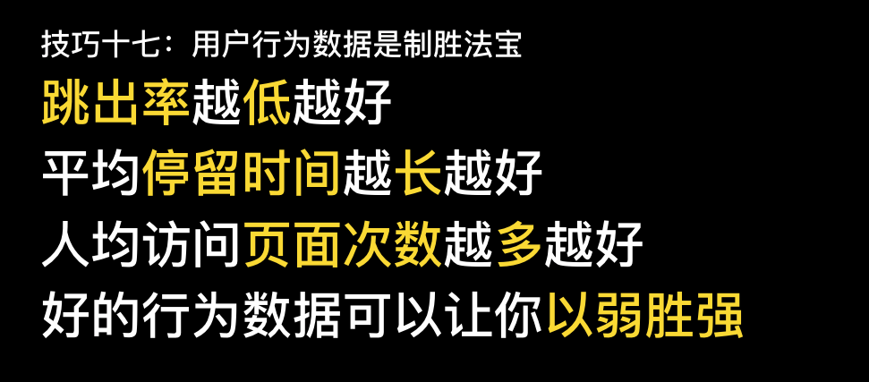
哥飞用户行为数据三指标PPT
这恰好印证了 井然 的实战观察：“投着投着，SEO流量突然就被带起来了。”他今年花了十万元广告费，“买的是对市场的判断——这件事如果可持续，十万、二十万我都觉得值，不必在这个站回本，下一个站回本就行”。
Fiona 的冷启动技巧全部指向同一目标：赠送积分提升留存，有意控制生成速度延长停留，用弹窗、视频、图片等动态交互留住访客。“冷启动优先拿精准流量，精准流量的用户行为对SEO帮助很大。”
小羊 的版本更直白：纯文字网页的停留时长，一定比不过图文视频俱全的页面；路径要顺畅，“用户用得都不顺手，谈什么满足需求”。
John 甚至把“负面客户”也派上了用场：那些来薅免费额度的用户虽然不付钱，却贡献了交互数据，还摊薄了你对SEO流量的依赖，反而有助于抵御谷歌算法更新的风险。
晚场分析“新站为什么拿不住流量”时， 哥飞 把账同样算回了用户行为。
热点新词的流量被大站后来居上挤下去，是供给变多的自然结果，热度持久就持续加外链拉回来；但另外两种掉流量是自己造成的：
一是页面本身留不住人——资讯类“过桥页面”，用户看完就走，而工具和游戏能留住用户，就能保住排名；
二是有人急于变现，接入了行为恶劣的广告联盟，弹窗、跳转、偷流量，“你的网站在谷歌眼里体验就下降了，你就拿不住流量”。
不过他也体谅急着赚到第一笔钱的新人：到手的2000美元，比一个空有流量的网站香——“有了这个经验，后面他就不会这么着急了。”
七、社媒与品牌：免费的流量放大器
Nicole辰 的整场分享都在回答一个问题：不花钱，怎样为产品换来大曝光。她把这套打法称为“员工代言”（Employee Advocacy）——让全员成为品牌的传播者。
她的第一个答案是“全员矩阵号”。她所在的YouMind团队，激励机制简单直接：一千粉丝以前，国内每涨一个粉丝奖励一元，海外奖励一美元——“做账号最难的就是前一千粉，所以前一千粉给最高激励”；
运营每周一条视频、研发每月两条，完不成要请老板喝奶茶。她原本担心同事不愿出镜，结果发现“人都是希望被看见的，只要公司明确鼓励，全员都跃跃欲试”——连最不擅长表达的研发同事，也能产出像样的产品视频。
全团队做到如今接近13.5万粉丝，“很多人说，在各个地方都能刷到我们”。
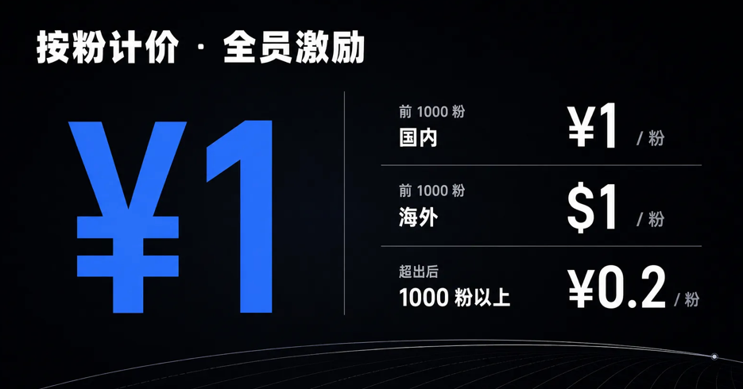
Nicole辰激励机制PPT
她尤其看好推特：“推特是最好做的平台，比抖音、小红书都好做，而且给流量非常大方。”
同一条内容，视频号和推特都是五百多个赞，推特的曝光却是视频号的三倍。
她的爆款公式是：与大V互动，加可复制的干货，加互动加热。发帖之前先与大V、朋友互动“预热”，把账号激活；发出之后请团队和私域用户点赞评论“加热”，平台便会把内容推入更大的流量池。
还有一个圈外人很少知道的技巧：看到正在爆的帖子，用“引用”而不是“转发”——“转发是给别人带流量，引用是分别人的流量”，再配上一条视频，还能吃到算法对视频的加权。
内容如何选题？产品功能、行业热点、个人内容三三开——“个人号比官方号容易涨粉，用户只对有血有肉的人感兴趣”。
她去年那条七千多赞的超级爆款，正是趁着春节期间全网爆火的热点，用自家工具半小时写出一篇系统化教程，“总共花了一个半小时，成了推特排名前十的爆款”。
对新手，她只有一个要求：“不要追求爆款，先追求数量——从月更到周更再到日更，先发一百条再说。”
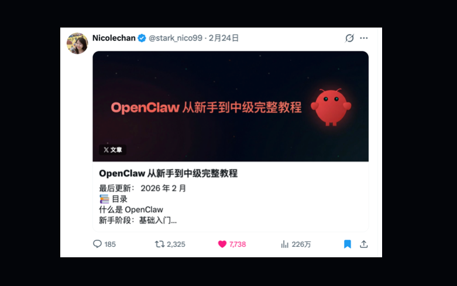
爆款案例截图 01
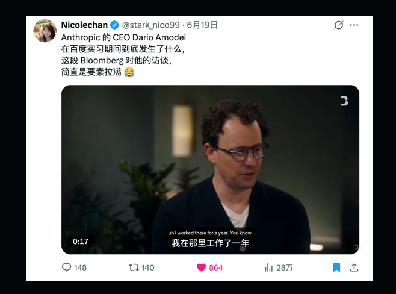
爆款案例截图 02
John 从获客体系的角度呼应了社媒的位置：B2B用户的认知，往往始于领英、推特上的一条帖子，保持发布频率，算法自会把你推给目标用户。 哥飞 则提醒，社媒同时还是新玩法、新词的发源地——刷社媒不只是消遣，是保持敏锐度。
有意思的是，晚场的 哥飞 恰好从SEO的角度，把Nicole辰公司的 Youmind又拆了一遍。在他看来，做新词、模型词、玩法词的站辨识度低，“大家满足的是同一个需求，有时你排前面，有时他排前面”，长久之计是做用户记得住名字的品牌站——用户哪怕记不住网址，也会去搜索引擎搜品牌名回来找你。
而YouMind正是“四两拨千斤”的样本：起初只是为创作者做了一个新模型的提示词页面，发现搜索引擎也能带来流量后，把每一个新模型的提示词都做成页面，再按图片、视频、使用场景聚合成一个完整的提示词频道，放进首页导航——“你不一定一开始就规划好一个频道，从某一个页面开始，做多了再聚合起来。”
但品牌站不等于把首页让给品牌词，他特意提醒：“一定不要浪费掉你的首页权重——不管你是做品牌站还是不做品牌站，首页的权重一定是最高的，应该让首页去打能打得动的关键词，去拿搜索排名、拿流量，而不是在首页放一个特别大的关键词。”
八、概率与堆量：“先发一百条”“先上十个站”
把各位嘉宾的方法论放在一起看，会发现他们讲的是同一套朴素的数学。
Fiona 用两个定理作了概括：其一是大数定理——成功率10%，就做十个站，总有一个能成，切莫死磕一个；其二是贝叶斯迭代——每做一个站都复盘优化，每一次进步都会放大后续的结果。
“万刀不是一天来的，是每天坚持出来的。”她还为执行力定下标准：找到词，二十四小时内上线，功能没做完就先放一个排队入口——“甚至功能还没上线，就能排到第一”。
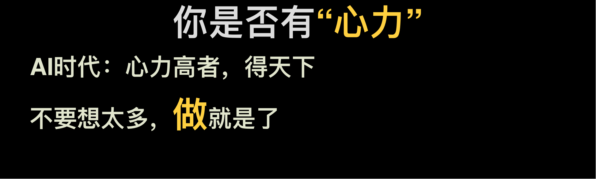
Fiona 金句 PPT
小羊 的“养鱼论”引得全场大笑，道理却很扎实：只做一两个站，今天没流量、明天没订单，人会焦虑；同时养十个站，“十个里面总有一个能跑起来”。
跑起来的重仓押注，资源全部倾斜；没起色的低流量站也不浪费，留作免费外链资源。“人家大佬卷预算，我们卷数量、卷交付的质量。”
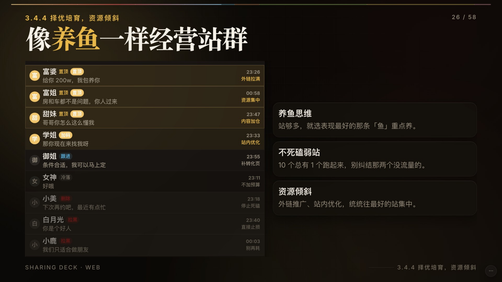
小羊“养鱼论”PPT
Asnull 则示范了从零到一的正确姿势：第一个站根本不为赚钱，专挑没流量、低难度的词，目的只有一个——把找词、注册域名、上站、部署、接数据的全部流程走通。
“很多人没有行动，就没有正反馈；没有正反馈，就更不会行动。”
流程一通，他的第二个站只用一小时便告上线。但他也提醒，堆量不等于盲目：“有人一个月上五百个站，没有任何用处——每上一个站，都要比上一个做得更好。”
井然 用真金白银证明了“先上线”的价值：他买下几十个域名，上线率做到百分之八九十。有个站他自己都忘了何时所建，某天突然来了一单，回头一看，用户一直在正常使用。
“买了域名就要上线，不上线才是真的浪费。”他的节奏感同样明确：快则一天上完一个站、发完外链，三十天没有起色，就果断掉头做下一个。
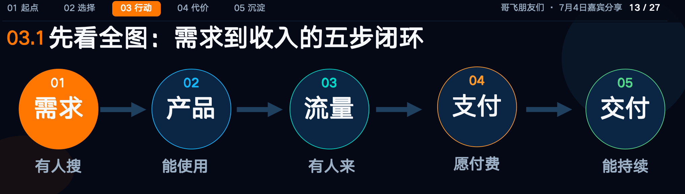
井然最小闭环流程PPT
Nicole辰 的社媒版本如出一辙：“一个人发是赌运气，很多人发是赌概率——先发一百条再说。”
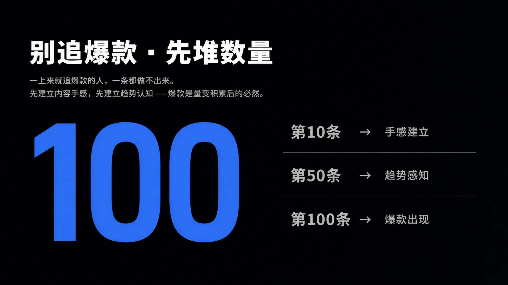
Nicole 辰内容数量 PPT
九、学费：支付、合规与风险
干货之外，几位嘉宾也坦然晒出了自己的伤疤。
井然 的支付经历教训惨痛：国际支付渠道用了一个半月即被封禁，其后辗转更换多家平台，迁移过程中流失了大量订阅用户；更痛的是一次配置失误——订阅周期数被误设为一，攒了几个月的订阅全部变成一次性支付，“好不容易涨起来的万刀月度经常性收入，一夜归零”。
他把教训浓缩成一句话：支付渠道务必多备几个、提前“养号”——先用一次性支付把单量与信誉攒起来，再放大到订阅和投流。“风控是分分钟的事情，不由你决定。”
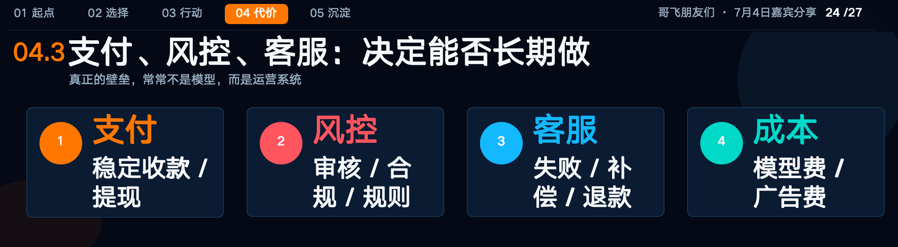
井然踩坑总结PPT
SEO小平 的教训来自法律合规：流量做大之后，你就是当地同行的眼中钉。他们有运营了四五年的域名，因年龄限制弹窗不符合当地法规，被同行持法院判决书投诉至云服务商，域名与服务器一并被查封。“这也是为什么要一个站一种语言、域名服务器全部隔离——分散式防御，死掉一两个站，再起就是了。”
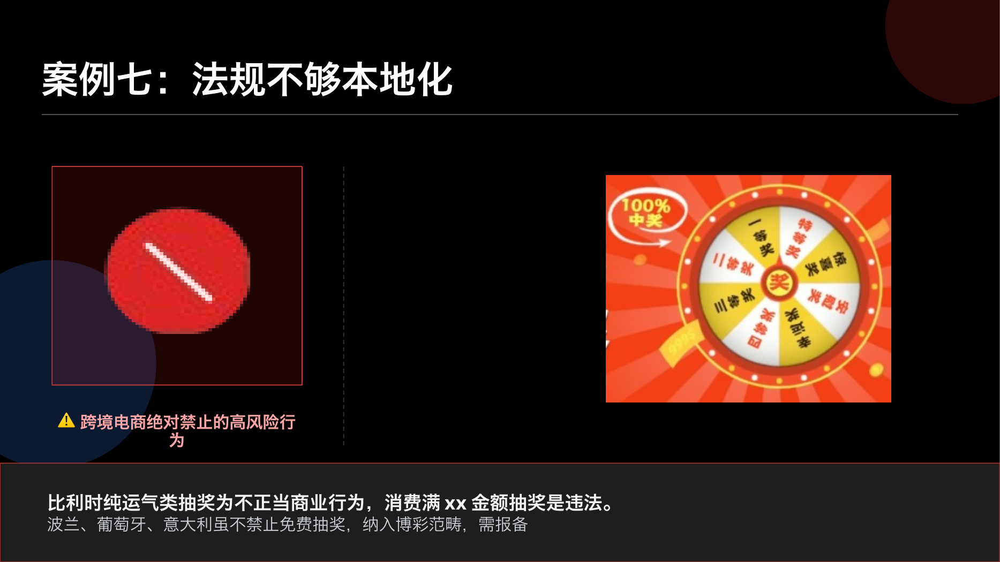
小平合规案例PPT
小羊 的学费交在外链上——两百美元买回一千条垃圾链接。他还顺带划出了灰色地带的边界：那些“为成交而生”的网站，其落地页与交互设计可以研究学习，但增长手法“懂的都懂，我们只研究、不要碰”。
Asnull 提醒新手不要在域名上省钱：某些廉价后缀灰色产业扎堆，搜索引擎天然不信任，老老实实使用主流后缀。
John 的风险观立足于生意层面：过度依赖SEO流量，算法一更新，冲击便是毁灭性的，因此要主动降低对SEO的依赖、经营品牌——“谷歌算法更新，永远利好品牌”；也不要用关键词匹配域名，风险太高。
他还给创业者提了一个许多人未曾想过的醒：“项目做起来，可以按营收的三十倍至四十倍卖出——该出手变现时及时出手，行业变化快，错过窗口，价值会缩水很多。”
十、心态：这场大会最动人的部分
技术会过时，方法会失效，而这一天最有生命力的内容，是几位“非典型选手”的心路。
小羊 的分享主题就叫“心态是最好的风水”。这个高中未读完、做过房产销售、送过外卖、干过夜场营销的2003年生的小伙，在台上讲《毛选》、讲《道德经》：“不要用宏大叙事把创业包装得太复杂，赚钱就是赚钱，梦想是有钱以后再去追求的事情。”“脱掉孔乙己的长衫，先当孙子，后当爷。”
他最后送给大家的话是：“不求一击之胜，只求永远在场——把时间和体力拼到极致，意志力会带你杀出重围。”
Asnull 在台上说出了许多人不敢说的循环：“做题的第一步，是承认自己什么都不懂。不要看不起那些‘低级’的东西——往往赚钱的东西都非常朴素，先赚到钱，再去考虑高级的事。”
他说，自己第一次参加哥飞社群的线下活动时，坐在台下幻想有朝一日能站上台分享，“现在我真的站在这里。相信你们也可以”。
至于“现在入场还来不来得及”这个经典焦虑，他的回答是：“一年前我刚入群时，和你们的感觉一模一样，觉得机会全没了。现在回头看，一年前遍地是黄金—— 你看不到机会，只是因为你还没有入局 。”
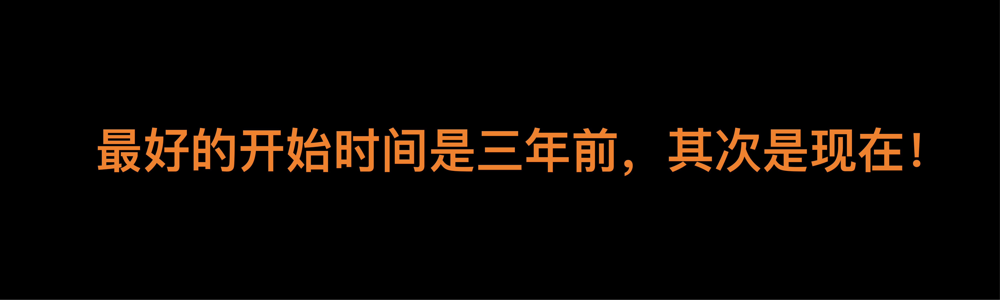
Asnull 金句 PPT
井然 讲的是选择。他离开做到副总经理的建筑行业，不是因为待遇，而是因为“这个项目离了我就停转，我投入越多就越离不开——我的成长出了问题”。
转型AI出海，他选的不是一个风口，而是“一条可以长期成长的路线”：“我不停留在几个月、一年，我把时间线拉到三五年、十年。
每学一项技术、每跑通一个闭环都很慢，可都串起来之后，发现其实不难。”
如今的他，滑雪时手机订单提示音响个不停，“坐缆车也在响——这种时候真的不能出事，知道吧？”全场大笑。
John 为创业者们正了正身份：“程序员要转变身份——你是创业者，你做的是有商业价值的资产。”
他的结果公式是：结果等于策略方向正确乘以执行到位，再加上运气。“方向错了调方向，执行错了调执行人，创始人要对结果负责。”他还劝大家尽量不要单干：“找互补的合伙人，一加一大于二。”
哥飞 在压轴时为这一天作结：同一份资料，每个人理解不一样、实践不一样、总结出的经验也不一样，最终的成长路径与成果各不相同。
“不要沮丧。高考也总有人考上北大，我们没必要跟最强的人比——跟自己比，今天比昨天更强，就足够了。”
现场观众照片 正面
十一、晚场“小灶”：原定两小时，讲到十点三刻
白天的议程六点过后结束，晚上八点，哥飞“小灶”开讲。原定两个小时，散场时已近十点四十多——他还惦记着回去连夜写第二天比赛互评系统的代码。
晚场里与各话题相关的干货，前文已经并入各节；这里记下的，是那些自成一体的部分。
这场加餐更像一次“工作台直播”。哥飞把自己为社群做的一整套教学工具当场演示了一遍：
- 一款模拟经营式的SEO模拟器——给你5000美元虚拟启动资金和365天时间，把找词、注册域名、上站、发外链、买接口的完整流程做成了一局“经营游戏”，教程看不懂的人，玩一遍就懂了，已有群友在里面“虚拟赚到”一两百万美元；
- 一款GSC模拟器，用十六步实战教学和九十天的可视化推演，让人亲眼看到用户的每一次搜索与点击，如何变成后台里的曝光和点击曲线；
- 还有一款谷歌搜索模拟器，把爬虫抓取、分词、建立倒排索引、加权排序的全过程做成可视化演示——“你通过这个就能理解搜索引擎的原理，然后你就知道我们的页面要怎么做了。”
配套的还有一个收入目标拆解器：填入“月入4000美元”的目标，它会倒推出你需要几个网站、每个网站要多少访客、关键词要多大搜索量、排到第几名；以及一份他坚持了两年多、每月手动整理的数据库——接入Stripe收银台的热门网站排行，谁在崛起、谁在走下坡路，一目了然。
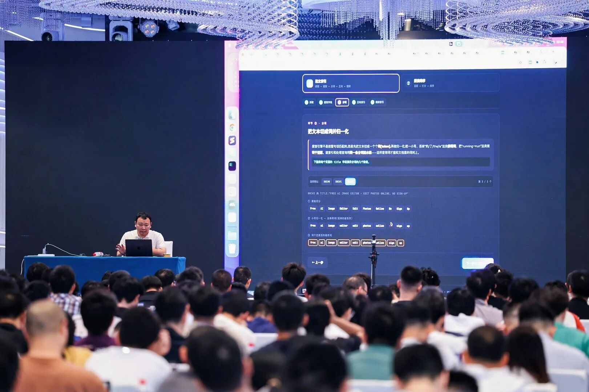
模拟器演示截图
一个真实案例演示了怎样科学地排查网站问题。有位做开源软件的群友，靠商用授权年收入过千万，网站权重极高，最近却发现曝光与点击持续下滑。
哥飞给他的排查方法是：把最近30天的后台数据逐日导出、合并去重，筛出至少有一次点击、十次曝光的页面作为“白名单”，再拿全站页面与之比对。
真相随之浮出水面：这个网站每发一个小版本，都会自动生成一个内容雷同的版本介绍页，最近又被多语言功能自动翻译成二三十种语言——海量低质重复页面被谷歌抓取，白白消耗爬虫的算力。
解法也随之明确：网站的页面分成三种，一种是拿来抢关键词排名的，叫做排名页，SEO要做足；另一种不为了拿排名而是给爬虫带路的，叫索引页，当然有时候一个页面既是索引页又是排名页；第三种是网站必须要有的页面如隐私协议等，但不是给搜索引擎看的，就统统设置noindex，别让爬虫来爬。
用他的话说，若不是权重足够高，这个站“早都有可能被谷歌K掉了”。
拆解一家增长迅猛的AI视频公司的新页面时，他现场“断案”出一个新玩法：这家公司有个介绍自家MCP的页面，28天拿到4.5万次点击——因为这个MCP能让本不具备视频生成能力的AI助手生成视频，带火了一批新的搜索词。
启发随之而来：自己的工具也可以做成MCP，提交到各家MCP导航站收录；还可以做内页，去承接“大厂名＋功能”的搜索量。
但他同时画下红线：内页可以蹭，域名不能碰——圈内昵称“龙虾”的那个开源项目，最初的名字 ClawdBot 就因为 Clawd 读音酷似Claude而被要求改名，把别人的品牌词直接注册进域名，律师函只会来得更快。
临近十点，他“解禁”了三个从未示人的自家网站。前两个是2024年9月上线的同题材音乐游戏站，关键词来自群友良辰美——其中一个做的正是前文提到的“typo词”。
这类魔性音乐小游戏脱胎于2007年的老游戏Incredibox：新玩法走红后，原公司迅速抢注了相关商标，把所有域名里带这个词的网站投诉下架，一众站长被迫改名。
“两个站加起来，赚了大概13万美元”，他当场致谢：“感谢良辰美给词”。
第三个站，是他花2万美元从群友手里买来的工具站：对方上线才两个多星期就被他相中，买来后横向拓展了一批同功能不同关键词的页面，累计营收约5.8万美元——“算上人力、时间和外链成本，其实没做起来。”连不成功的账本，他也摊开给大家看。
还有一个案例，是他一个多月前就埋下的伏笔。5月下旬，一位知名网文作者刚公布新书书名，他判断优秀作者的新作搜索量必然越来越大，两天内注册了域名，做了一个只有章节目录、世界观地图和人物介绍的单页站——版权规避得死死的，正文一律跳转官方平台阅读。
此后他几乎什么都没做：内容一个月没更新，外链只发过一条博客评论。新站上线次日曾冲出91次曝光、12次点击，随后被各路老站挤了下去，断断续续归零；熬到活动前几天，曲线终于重新抬头。
“做好了一个站之后，得耐得住前面寂寞的时期。”这个案例同时回答了“还能做什么类型的关键词”：小说、电影、游戏——一切会被提前透露名字的作品，都可以做粉丝站、周边站，“我们这一套SEO方法，在任何网站都适用”。
答疑环节，问得最多的是新词流量“一波流”怎么办。他的答案是保住首页、横向拓展：别轻易改首页，一改，谷歌对整站的评级和信任度都会波动；正确做法是不断新增内页，从首页加内链把高权重传下去，再给内页配外链——“横向拓展是有效的，那我们就照着这句话去做就好了。”
在他看来，新词不是一波流，而是帮你快速拿到正反馈的取巧捷径：靠着一个有积累的站再做更多页面，每年都能攒下开花结果的网站。
至于“上内页、发外链要做到什么时候是个头”，他笑称这是一场有正反馈的“无限游戏”：加一个页面就多一份流量，加两条外链排名就更靠前，“真的没有头”——赚够了就请人代劳，自己抽身去生活。
当晚最重要的一条消息留在了最后：次日上站Hackathon的赛制调整。过去两届比的是页面好不好看、功能全不全，评委看一百多个网站看到眼花，也没考察社群真正教的东西。
这一次改为现场公布规则、限定词根，人人从同一起跑线找关键词、做页面、注册域名、上线提交，再由群友随机互评打分——评别人的站，本身就是一次学习。
奖金总额1.4万美元、约合10万元人民币，与上届持平：特等奖一名2000美元，一等奖五名各1000美元，二等奖十队各500美元，三等奖二十队各100美元。“
大家的门票都拿来发奖金了，我没赚大家钱。”
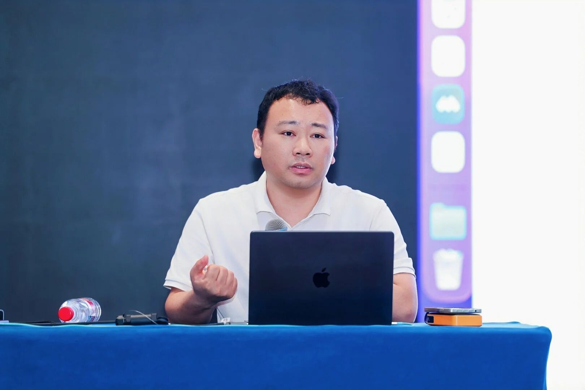
小灶现场照片
尾声：第二天，从“听”到“做”
第二天，键盘声取代了话筒声。7月5日全天是上站Hackathon：374位朋友持票参赛，180支队伍完成组队，175支队伍提交作品，198位参赛者参与提交，最终36支队伍、52位朋友获奖。
比赛词根到现场才公布，人人同题竞技，参赛队伍在一天之内完成从找词、开发到上线的全流程，傍晚提交作品，由群友随机互评打分，晚间举行颁奖典礼，特等奖、一等奖、二等奖、三等奖共同分走了1.4万美元奖金。
这场比赛，几乎就是把前一天讲的方法论当场演练了一遍。比赛的过程、获奖的作品与队伍的故事，信息量不亚于分享日本身，我们将另发一篇文章详细讲述，敬请期待。
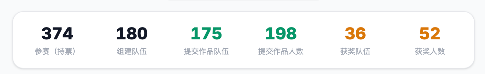
上站 Hackathon 数据
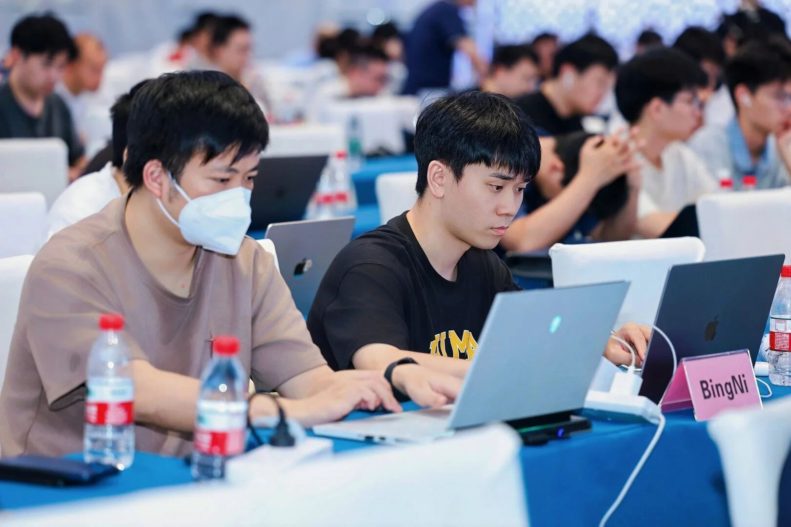
上站 Hackathon 现场照片 01
上站 Hackathon 现场照片 02
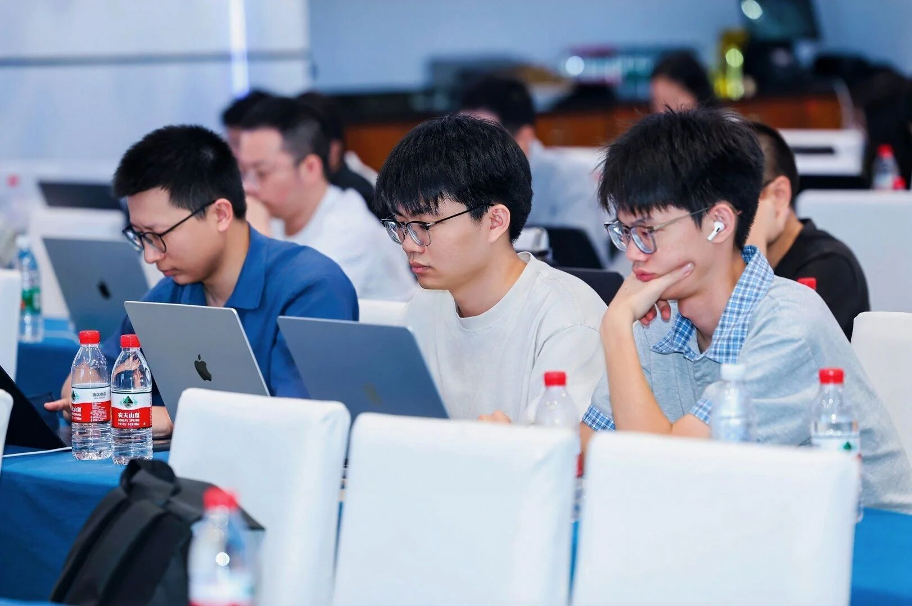
上站 Hackathon 现场照片 03
上站 Hackathon 现场照片 04
结语
650个人聚在一起两天，听到的不是一套标准答案，而是八条完全不同的路：有人靠体系，有人靠堆量，有人靠细节，有人靠心态。
而底层的东西出奇一致：找被验证过的需求，用AI放大自己，快速上线拿反馈，认真对待每一个用户，然后——永远在场。
正如Fiona所说：“我们要卷的不是AI，是其他人类。只要排在前10%，就能过得很好。”
下一站，北京 7 月 18 日再见。
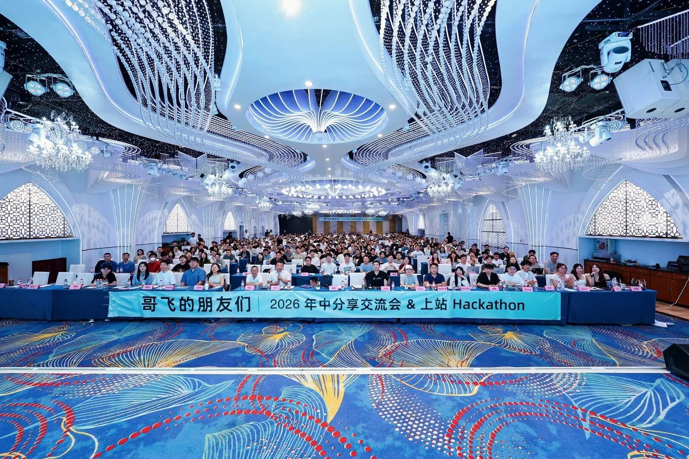
全场大合照
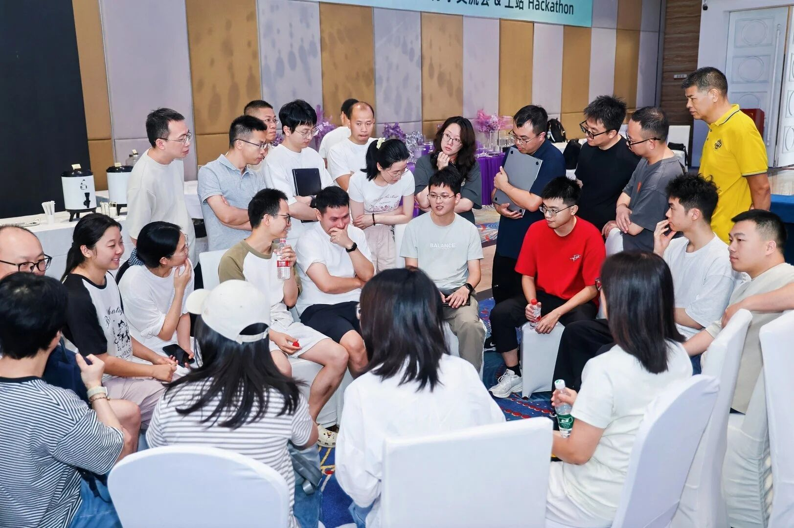
晚场交流照片